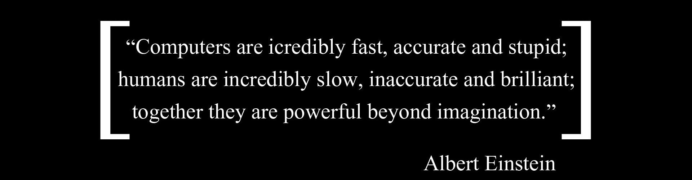

|  | ||
|---|---|---|
What is Computer Science☇ WATCH ME!Computer Science is the study of computers, their design (computer architecture), and their uses for computation, data processing, and systems control, including design and development of computer hardware and software and programming. The field encompasses theory, mathematical activities such as design and analysis of algorithms, performance studies of systems and their components, and estimation of reliability and availability of systems by probabilistic techniques. Because computer systems are often too large and complicated for failure or success of a design to be predicted without testing, experimentation is built into the development cycle. |
Facts behind Computer Science☇ READ ME!
|
|